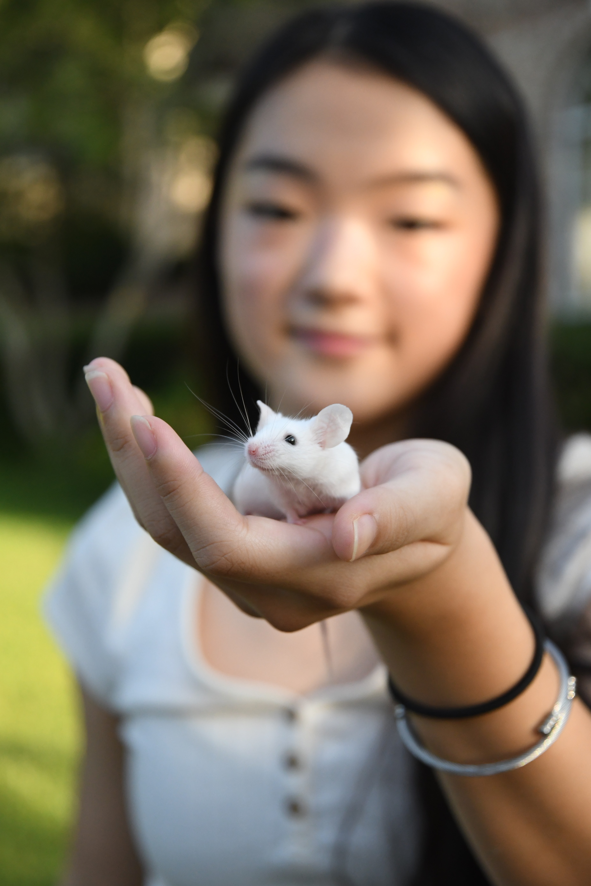

<div class="textcontainer">
<h3>about me</h3>
<p class="margin"> </p>
<div class="center-row">
<p id="aboutme">
hello! thanks for visiting my ps70 website! my name is gardenia, and i'm a junior at harvard studying computer science! i live in dunster house.
i was born and raised in austin, texas! some of favorite things include matcha, thrifting, and flowers. feel free to contact me by email at gardenialiu@college.harvard.edu!
<br><br>
this is my documentation site for <a href="https://nathanmelenbrink.github.io/ps70/" style="color: #2e8b57;">ps70: introduction to digital fabrication</a> for the fall 2025 semester!
</p>
</div>
<br></br>
as for some fun facts about me, i grew up doing solo and synchronized figure skating! i also used to have two pet mice, which could do tricks!
<br></br>
<div class="center-row" style="gap: 20px;">
<img src="./skating.jpeg" alt="figure skating" style="width: 45%;">

</div>
<br></br>
</div>